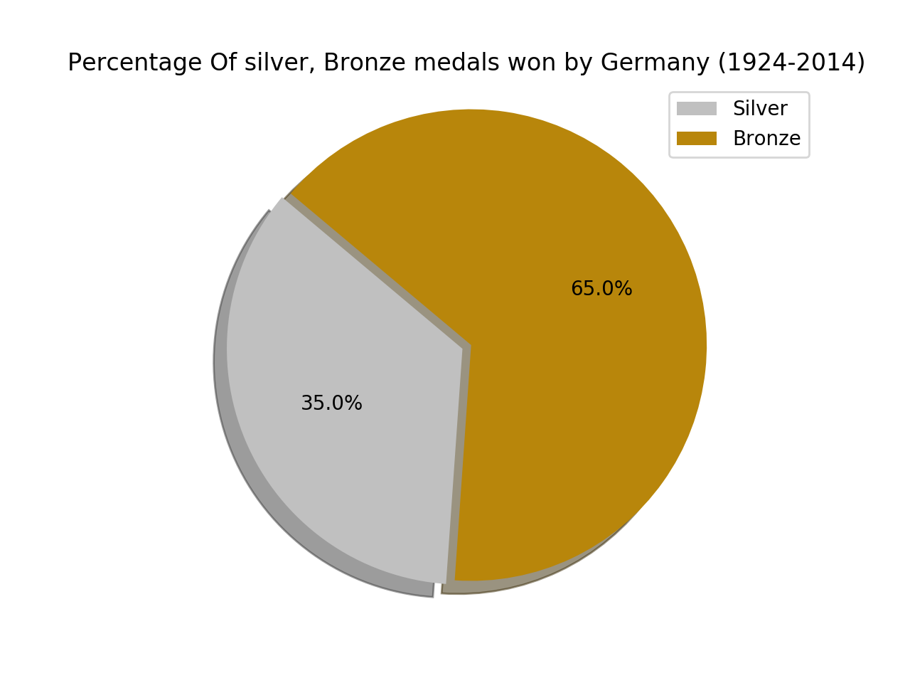

I MADE SUPERB OLYMPIC DATA PROJECT

I am discussing about germany country.the first bar chart represnts the number of medals won by germany from year 1924 to 2014.
in the inital year germany won very less medals compared to other country but later on it took a raise and reached hieght upto 61 medals.

this second chart reprsent the number of gold medals won by the germnay. in the initial year the medals started with only 4 gold and in the mid of year germany was didnt receive any single gold medal. but than later in the year 2014 it took its height and reached heighest. by winning 26 gold medal. that was a great change for germany country in olympic.

This third type of visualization describes about the number of bronze and silver won. its a pie chart which show that which medal is won more compared to other medal. like its clear that number of bronze is more than number of silver. the data is reprsented in percentage form.

This pie chart describes about number of gold medal won by germany on comparison with number of bronze medals.bronze medal is the most won by the country than any other two medals. the data is similarly described in percentage form.

this line chart describes about number of gold medals won by women from 1940 to 2014.the line graph is quite steady with 0 medals for women then it took a rapid growth to increase the number of women in winter olympic for germany. and then women started winning the medals.

the men won more number of medals compared to women but then at the end their was a contradiction with situation.women won more than man.this wa sthe thing germany did a great revolutionary change in the records by winning more medals in winter olympics and even incraesing women to win more medals for germnay.
thanks for being with me in my germany data viz.